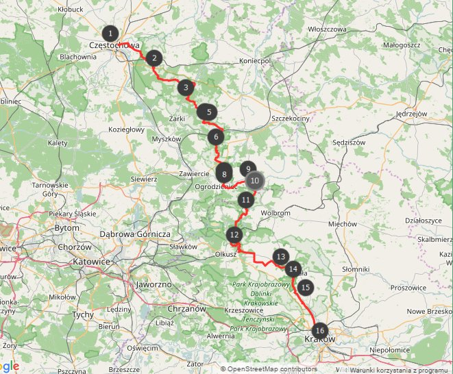

Szlak Orlich Gniazd jest historycznym szlakiem turystycznym w Polsce, który obejmuje zespół zamków i warowni wybudowanych na Jurze Krakowsko-Częstochowskiej, w regionie Małopolski. Szlak Orlich Gniazd biegnie przez malownicze tereny, które charakteryzują się skalistymi wzgórzami, klifami i wąwozami. Nazwa "Orle gniazda" pochodzi od zamków, które były umiejscowione na wysokich skałach, przypominającymi gniazda orłów. Szlak Orlich Gniazd składa się z około 25 zamków, twierdz i ruiny obronnych, z których większość powstała w średniowieczu. Najbardziej znane zamki na Szlaku Orlich Gniazd to między innymi: Ojców, Pieskowa Skała, Ogrodzieniec, Mirów i Bobolice. Każdy z tych obiektów ma swoją unikalną historię i architekturę, a odrestaurowane zamki często pełnią rolę muzeów lub miejsc organizacji imprez kulturalnych.
